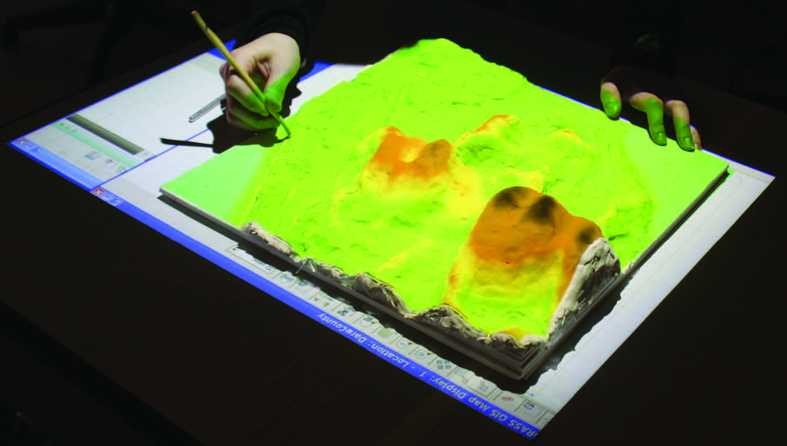
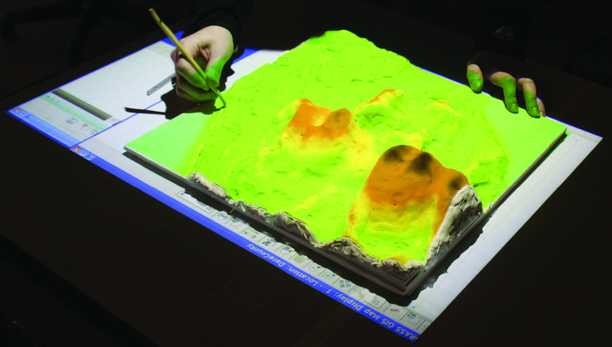

FOSS4G NA 2016
Tangible Landscape
Anna Petrasova, Vaclav Petras, Brendan Harmon, & Helena Mitasova

 

An evolution of Illuminating Clay and the Tangible Geospatial Modeling System
Image source: MIT Media Lab
With Tangible Landscape you can hold a GIS in your hands - feeling the shape of the earth, sculpting its topography, and directing the flow of water.

Tangible Landscape couples a digital and a physical model through a continuous cycle of 3D scanning, geospatial modeling, and projection


Tangible Landscape is designed to make scientific data, models, and simulations exploratory, engaging, and fun


Solar irradiation and cast shadow


Optimized trail routing between waypoints based on energetics, topography, and cost maps with feedback including trail slopes and viewsheds
Draw trails with a laser pointer or digitze markers as waypoints or viewpoints.


Manage the spread of termites across a city by treating city blocks


Save houses from coastal flooding by building coastal defenses

Tangible Landscape plugin for GRASS GIS
Petras, V., Petrasova, A., Harmon, B., Meentemeyer, R.K., Mitasova, H. Integrating Free and Open Source Solutions into Geospatial Science Education. ISPRS International Journal of Geo-Information. 2015, 4, 942-956. doi:10.3390/ijgi4020942

Read our book and give it a try